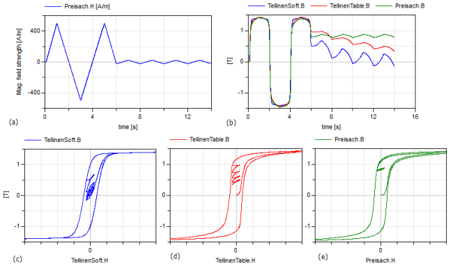

HysteresisModelComparisonComparison of the different hysteresis models |
|
Diagram
{kind=link}
Information
This information is part of the Modelica Standard Library maintained by the Modelica Association.
Use the following simulation settings:
- Stop time: 14 s
- Number of intervals: 5000
- Tolerance: 1e-5
This example compares the behavior of three different hysteresis models due to the exact same input magnetic field strength. The three different models are:
- Model=GenericHystTellinenSoft, Tellinen hysteresis model, the upper and lower branch of the limiting hysteresis loop is roughly approximated with simple hyperbolic tangent functions (Fig1. c)
- Model=GenericHystTellinenTable, Tellinen hysteresis model, the upper and lower branch of the limiting hysteresis loop can be defined with almost arbitrary table data (Fig1. d)
- Model=GenericHystPreisachEverett,Preisach hysteresis model, the hysteresis shape is defined by the Everett function (Fig1. e)
Compared to the complex Preisach hysteresis model the Tellinen model is very simple and thus computationally more effective and stable. It is sufficient for many applications. But the Tellinen model has inherently a problem with small periodic input field variations at locations where the outer hysteresis loop has large slopes. In such a case, the simulated minor loops settle to the center of the hysteresis envelope curve, whereas the minor loops of the Preisach model stay constant ('property of equal vertical chords', [Ma03]). The input signal of the example (Fig. 1 a) corresponds to that case and Fig. 1 b-e shows the behavior of the different models.
|  |
Components (20)
| timeTable |
Type: TimeTable |
|
|---|---|---|
| winding1 |
Type: ElectroMagneticConverterWithLeakageInductance Description: Winding 1 |
|
| elGnd1 |
Type: Ground |
|
| magGnd1 |
Type: Ground |
|
| resistor1 |
Type: Resistor |
|
| vSource1 |
Type: SignalVoltage |
|
| winding2 |
Type: ElectroMagneticConverterWithLeakageInductance Description: Winding 2 |
|
| elGnd2 |
Type: Ground |
|
| tellinenTable |
Type: GenericHystTellinenTable |
|
| magGnd2 |
Type: Ground |
|
| resistor2 |
Type: Resistor |
|
| vSource2 |
Type: SignalVoltage |
|
| winding3 |
Type: ElectroMagneticConverterWithLeakageInductance Description: Winding 3 |
|
| elGnd3 |
Type: Ground |
|
| preisachEverett | ||
| magGnd3 |
Type: Ground |
|
| resistor3 |
Type: Resistor |
|
| vSource3 |
Type: SignalVoltage |
|
| gain |
Type: Gain |
|
| tellinenSoft |
Type: GenericHystTellinenSoft |